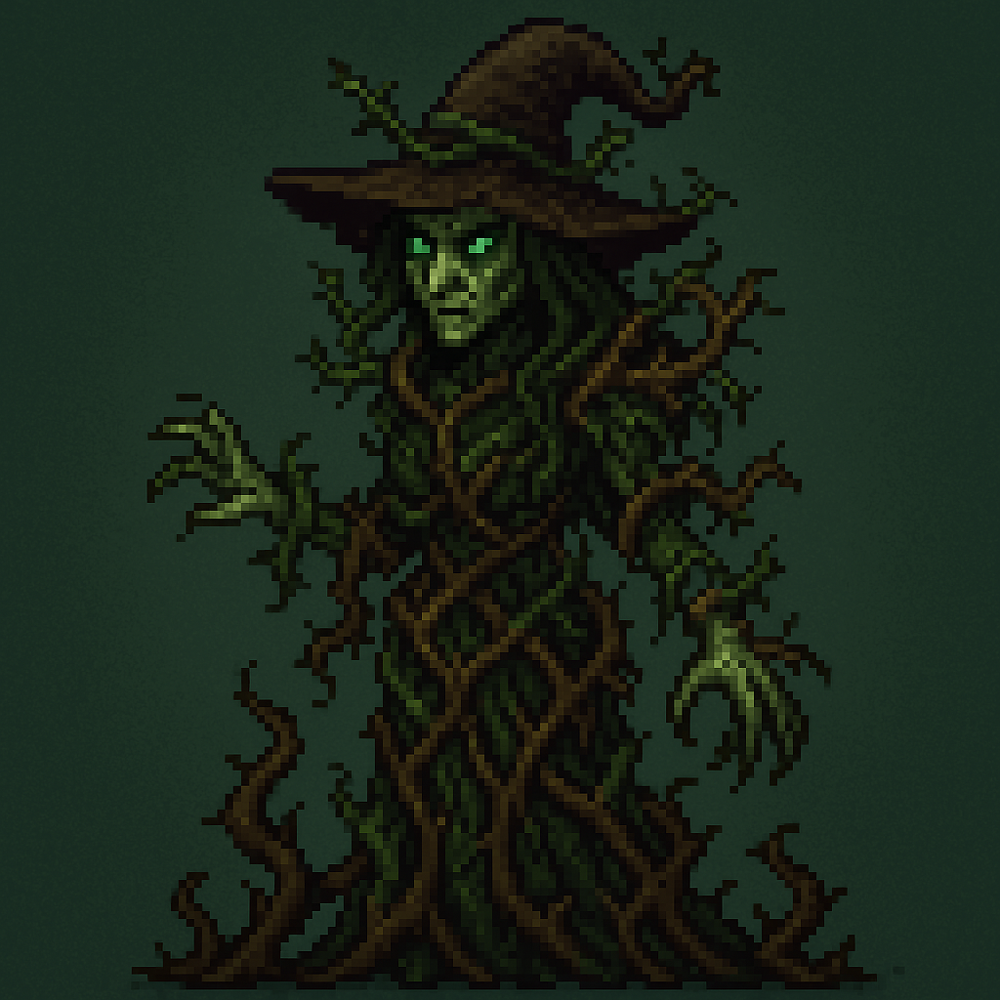

Protagonist: Aldric Bloodbound
Motivation:
A monster hunter wanting to kill 3 witches who are sending monsters from another realm, his goal is to earth to bring back peace.
Attitude:
He does not speak much rather he lets actions speak for him, hunting monsters to him is nothing more than his duty he does not do it for the thrill. He has no remorse towards monsters even if it means using morally grey tactics to get results. Has gained magical powers over the years of defeating many powerful monsters.
Appearance:
tall, broad shoulders, long dark hair falls past his shoulders. His clothes are worn, practical, and layered for protection and concealment. He wears a long leather coat that is dirtied from monster blood, dirt and ash. A belt around his waist concealed by his coat contains blades, vials and other helpful tools. His facial features are cold.

Demon: Malgrin
Motivation:
Malgrin helps Aldric to defeat the witches. What Aldric does not know is that Malgrin wants them gone because they are blocking his ascent to power and Aldric is the perfect weapon. The witches are protected against demon magic, but Aldric can attack them for him. Malgrin has power over souls bringing Aldric back to life if he fails in his quest.
Attitude:
friendly, charming and persuasive. Hides his intentions under his persona of elegance and well-articulated words.
Appearance:
Malgrin appears to be unnaturally tall and elegant. His skin formed by a dark inhumane texture. Curved horns accompany a mask like face that softly glows from holes where his eyes should be. He is grey in colour with gold accents

The Dungeon Witch (First Realm – Depths, bone, decay, and traps):
Motivation:
Ostella seeks to unlock forbidden knowledge, the knowledge to cheat death. She believes to gain this knowledge she must collect as many souls as possible. She has mastery over the dead. Aldric has an ability recover slightly from fatal wounds, whenever a fatal blow hits him, he would regain some life giving him a second chance. Ostella took this ability from him hoping it will mean that his soul will be hers.
Attitude:
Treats the lives of others as some sort of puzzle piece, everything and everyone is just another step to her climb to knowledge. No emotions ever shown beyond her curiosity and thirst of knowledge. Sees herself as a scholar or mortality.
Appearance:
Ostella is draped in robes that seem poorly stitched. Her build is almost skeletal, simply looking at her is haunting. Her skin is faded her eyes glow a cold blue they are soulless and detached from reality. Chains etched with sigils wrap her arms and drag across the floor as she moves.

The Forest Witch Eldra (Second Realm – Nature twisted into corruption):
Motivation:
Eldra believes humanity has corrupted nature with their impurities. She has shaped her dimension into a giant fortress of living plants, all monsters in her realm have plants growing on them. Aldric originally could sense nearby enemies, traps, and hidden pathways a “sixth sense”. Eldra took this ability to make it easier to ambush and to grow her control while in the forest realm.
Attitude:
Territorial, she treats anyone who enters her realm unrequested as a filthy intruder coming to taint her realm with impurities. She sees herself as the righteous protector of nature on a mission to purge all filth.
Appearance:
Eldra’s body is intertwined with living vines and tree bark a natural, pleasant aroma follows her like a combination of the best scented flowers. Her eyes a deep forest green and strangely pupilless. Thorny roots coil her garments they act as a living barrier between her and the unnatural world.

Queen Witch Seraph (Final Realm – Central Antagonist):
Motivation:
She seeks to merge all realms into one under her rule. Her own dark and twisted realm. She steals Aldric’s power of realm travel to prevent anyone from travelling between dimensions without her being the one letting them. In her view a world under her reign is a balanced world. (after defeating her the player will be able to navigate back through the realms taking paths they did not take before without the need of dying to return).
Attitude:
She is cold and rational, she is manipulative everyone even her fellow witches are just a tool to her. Rarely acts out of emotions every action and every word has been calculated and plotted. An intimidating aura follows her.
Appearance:
The Queen is tall wearing layered black and silver garments. Her skin is incredibly pale, but her eyes have a faint purple glow from deep within as if the magic is breathing from within her. Her presence distorts reality around her almost as if reality itself is silent from fear of her.